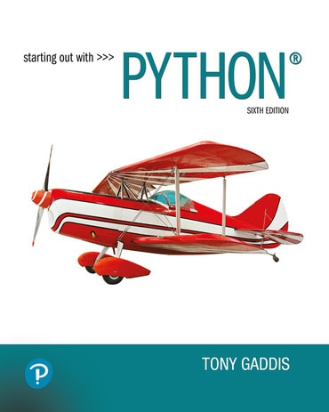

ISA 381: Business Programming
01: Why Python (Still) Matters in the Age of AI
Fadel M. Megahed
Subbing in for Dr. Maliha Alam
Fall 2026 · Farmer School of Business
Learning Objectives for Today’s Class
By the end of today’s class, you should be able to:
Describe what Python is and where it fits in the business analytics toolkit.
Identify how real companies use Python in production, with sources you can check yourself.
Evaluate an AI-generated analysis against your own answer on the same data.
Run your first Python program in Google Colab.
Poll: Python in Practice
Course Logistics
Course Guide: on Canvas. Grading, schedule, and policies all live there.
Textbook: Gaddis, Starting Out with Python. This week covers Chapter 1, and the terms we use today are the terms you will be assessed on.
Grading and course questions: Dr. Alam.

Why Python, Why Now
What is Python?
Python is a programming language with a simple, readable syntax, created by Guido van Rossum and first released in 1991. Two words explain how it works, and one explains why it is everywhere:
A complete Python program. You will run code like it before class ends.
High-level, interpreted, and syntax are Chapter 1 vocabulary in Gaddis, Starting Out with Python.
Who Uses Python, and For What?
Click a company in the network to see how it uses Python, with a source you can check. Drag nodes if things overlap.
Each write-up ends with a link to the company's own engineering blog, official documentation, or reputable press coverage, so you can verify every claim.
Python in Last Week’s Job Postings
From the ChatISA Job Scout harvest of Sunday, August 16: 1,437 postings aimed at analytics and IS careers. 363 (25.3%) tag Python, 71% of those as required. Who are those 363 postings hiring?
Analyst and analytics titles are the largest group asking for Python.
Communication co-occurs with Python (269 postings) more often than SQL (249).
Data: ChatISA Job Scout weekly harvest (ActiveJobs and USAJobs APIs), retrieved August 16, 2026. Not the whole job market: Job Scout targets analytics and IS careers.
Exercise: You vs. the AI
A company tracked its two sales regions by month. avg_order_value is the average dollar value of one order in that month; orders is how many orders that month had (orders.csv).
| region | month | avg_order_value | orders |
|---|---|---|---|
| East | Jan | $80.00 | 10 |
| East | Feb | $40.00 | 1,000 |
| West | Jan | $55.00 | 500 |
| West | Feb | $56.00 | 520 |
Which region had the higher average order value this year? Work it out with your neighbor, any way you like, then vote.
What Did Gemini Do With the Same Question?
Note that it analyzes the data in Python before producing an output.
The two computations in play, and why they disagree:
Averaging the monthly figures: East ($80 + $40)/2 = $60.00 vs West $55.50. East “wins.”
Weighting by orders (total revenue over total orders): East $40.40 vs West $55.50. West wins, because East’s $80 month had only 10 orders.
Gemini actually reported both. Three questions for us:
Which computation answers the question the business is asking?
If the AI had shown only one of them, how would you have known to push back?
What did it take to follow what the AI did? (Answer: reading a few lines of Python. You will run the same check yourself in Colab shortly.)
Ask the Job Market Yourself
The same Sunday harvest, live. This view opens pre-filtered to analyst postings; clear the search box to explore all 1,437.
Data: 1,437 postings (full-time, federal, and internships) harvested by ChatISA Job Scout from the ActiveJobs and USAJobs APIs. Retrieved August 16, 2026.
ChatISA
ChatISA: Free AI Tools for Every ISA Student
An Executive Overview of ChatISA
Activity: Find Your Python Job
Sign in at https://chatisa.fsb.miamioh.edu and open Job Scout.
Add ISA 381 to your courses, so Python counts among your skills.
Find one posting you would genuinely apply to. Internships count!
Note two things: is Python listed as required or preferred, and what is the job title? (While you are there, notice the Practice this Interview on ChatISA button.)
Your First Python Program
We will use Google Colab: Python in your browser, no installation, free. (Colab is a hosted Jupyter Notebook, another Chapter 1 term.)
Open the class notebook.
Sign in with a Google account, then File → Save a copy in Drive.
Run each cell in order with Shift + Enter. The notebook walks you through:
printing your first message,
looking at the orders table from our exercise, and
computing both answers, so you can see for yourself which one the data supports.
No prior Python is assumed. Every cell has a plain-English explanation above it, and nothing you can click will break anything.
Summary of Main Points
By now, you should be able to do the following:
Describe Python: a high-level, interpreted language with readable syntax, dating to 1991 and everywhere in 2026.
Name real organizations that run on Python (JPMorgan, Netflix, Instagram, the James Webb Space Telescope, P&G), and point to the sources behind each claim.
Explain what last week’s job data showed: in postings aimed at analytics and IS careers, a quarter expect Python, analyst titles are the largest group asking for it, and communication is its most common companion skill.
Treat an AI-generated analysis as a claim, not a fact. You saw two defensible computations disagree, and you know what it takes to check.
📖 Prep for Our Next Class 📖
Read Gaddis, Chapter 1. You have now experienced most of it; the reading attaches formal names to things you did today. There is no assignment this week.
Next class: what happens in the half-second after you press Run. The CPU, memory, and the fetch-decode-execute cycle, connected to the Colab notebook you just used.
Questions this week: fmegahed@miamioh.edu.

ISA 381 · 01 · Slides and course guide on Canvas